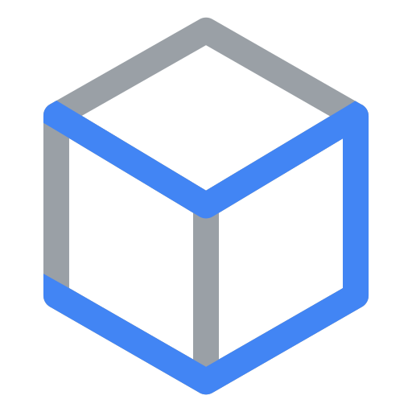

j Workload Identity Federation — 全域系統架構圖
涵蓋 it-maintenance-scripts (Ansible / Terraform / Private PKI / On-Prem X.509 WIF) 與衍生專案 j-serverless-mailservice (跨專案授權 + AWS→GCP WIF)
Ansible 維運引擎
run.sh · Checkpoints · 4 Workflows
bootstrap / renewal / rekey / rotate
Offline Root CA
root.key · P-256 · 3650d
僅存 WSL · 永不外流
Terraform CLI & Git (it-maintenance-scripts)
modules/x509-workload-identity-pool · ca/*.pem + ca/retiring/
零私鑰入庫 · Plan 核准制
j Private Intermediate CA (1095d)
/volume1/@j-private-ca/intermediate_ca_key/ · root:root 700 · 無 ACL
DSM Daily Root Task (sign_workloads.sh + health_check.sh)
30d Leaf 簽發 · <10d 自動續約 · <5d / <90d 告警通知
nas-jenkins
Jenkins Container
UID 1000:1000 · 30d Cert
AR Reader
UID 1000:1000 · 30d Cert
nas-registry-puller
Host Docker + gcr v2.2.1
+ nas-iot-uploader (預留)
AR Reader
+ nas-iot-uploader (預留)
SMB CSR 交換區 (wif_csr/<cn>/)
csr.pem 入 → NAS 簽發 → cert.pem 出 · 嚴格限定 STAFF\erp ACL
j_wif_certificate.ps1 (STAFF\erp)
C:\ProgramData\j-wif\<cn>\ · 本機產生私鑰 · 自動 CSR 續約
erp-dns-firewall
更新 VPC 防火牆 IP
讀取 2x Secret Manager
同步 Cloudflare WAF
Firewall + Secrets
讀取 2x Secret Manager
同步 Cloudflare WAF
erp-backup
ERP DB 備份與憑證同步
讀 j-it-data
寫 j-erp-backups
GCS Backup
讀 j-it-data
寫 j-erp-backups
WIF Pool: j-onprem + STS mTLS
Provider: j-private-ca · sts.mtls.googleapis.com
Trust Store: Root + Intermediate + retiring/ · CN Allowlist
Direct Principal Grants · 零 Service Account
Trust Store: Root + Intermediate + retiring/ · CN Allowlist
Shared VPC Firewall
Custom Role 更新來源 IP
erp-dns-firewall
Secret Manager
cloudflare-update-api-token
secretAccessor
Cloud Storage (GCS Buckets)
• j-it-data (objectViewer) · j-erp-backups (objectAdmin)
• j-shared-vpc-host-tfstate (Terraform State)
erp-backup + Terraform Backend
• j-shared-vpc-host-tfstate (Terraform State)

跨專案 Artifact Registry (us-west1)
• j-staffportal: j-pythonportal-registry
• j-website: j-vlmcsd-registry
nas-jenkins & nas-registry-puller
• j-website: j-vlmcsd-registry
Cloudflare DNS & WAF (外部服務)
由 erp-dns-firewall 讀取 GCP Secret Manager 金鑰後
自動更新 DNS A/AAAA 紀錄與 WAF 防護規則
External SaaS · 圓角方框表示
自動更新 DNS A/AAAA 紀錄與 WAF 防護規則
AWS Batch Drain Job
無伺服器郵件批次汲取作業
j-serverless-mailservice
AWS Fargate Task
Python 容器 · google.auth.aws
Serverless Runtime
AWS IAM Task Role
mailservice-batch-task-role
Signed GetCallerIdentity
跨雲信任契約
Signed GetCallerIdentity
WIF: mailservice-aws-pool
Provider: aws-batch
→ SA: mailservice-batch-writer
AWS→GCP 聯合身分
→ SA: mailservice-batch-writer
Secret Manager
mailservice-ingest-api-key
唯二授權: erp-dns-firewall / portal
跨專案 WIF 授權
唯二授權: erp-dns-firewall / portal
Mail Ingest Bucket
接收 AWS Batch 上傳郵件紀錄
GCS Ingest
Cloud Run (pythonportal)
員工入口網站後端 Runtime SA
Serverless
Cloud Firestore — Mailservice Metadata & Index Database
儲存郵件處理狀態、索引與系統中繼資料 (j-serverless-mailse-<hash>)
📌 GCP Workload Identity Pool: j-onprem
GCP · Security & Identity
中央 X.509 Provider (j-private-ca) 僅信任 j Private CA Trust Store，透過 sts.mtls.googleapis.com 驗證 mTLS 憑證與 CN Allowlist，核發短期 Federated Token。
零靜態金鑰與最小權限
- • 雙層私有 PKI：離線 Root (3650d) 僅存 WSL，NAS Intermediate (1095d) 置於共享目錄外並禁止 Synology ACL。
- • Direct Principal Grants：地端 5 個 CN 直接綁定資源 IAM，無需 Service Account 或 JSON Key。
- • 即時撤銷機制：自 Terraform Allowlist 移除 CN 即可立即阻斷 Token 核發。
單一指令全生命週期維運
- • Check-then-Checkpoint：所有 playbook 先跑
--check --diff，實跑時每個階段於說明點確認一次。 - • 無停機憑證輪替：
ca/retiring/讓新舊 CA 並存，待全部 Workload 通過 Token 驗證後才執行finalize移除舊 CA。 - • 權限基線守護：自動稽核 NAS POSIX/ACL 與 Windows ERP 目錄擁有權。
跨專案與 AWS→GCP 衍生應用
- • 跨專案復用 Pool：
staffportal、website與mailservice僅需新增 IAM member 即可信任j-onprem。 - • AWS→GCP 跨雲 WIF：AWS Batch on Fargate 以
mailservice-batch-task-role換取 GCP 短期憑證。 - • 職責隔離：AWS Batch 僅寫入 Ingest Bucket，無法讀取
mailservice-ingest-api-key。